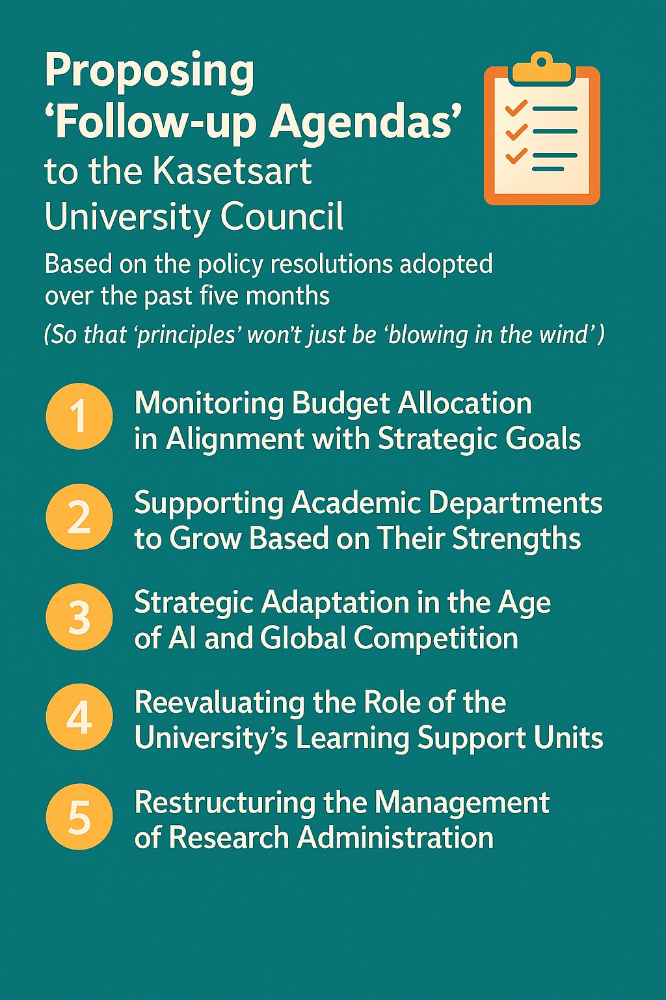

มติที่ดีไม่มีความหมายถ้าไม่มีการติดตาม และวาระติดตามคือกลไกที่ทำให้หลักการไม่หายไปกับสายลม
{kind=link}

โพสต์นี้มีจุดยืนชัดมากว่า การทำงานเชิงนโยบายในมหาวิทยาลัยไม่ควรจบลงแค่คำว่า เห็นชอบในหลักการ เพราะถ้าไม่มีการติดตาม มติที่ดูดีในห้องประชุมก็อาจหล่นหายไปกับเวลา โดยไม่ทิ้งผลลัพธ์จริงไว้กับระบบเลย
การเสนอ วาระติดตาม จึงไม่ใช่การจับผิด แต่เป็นกลไกสำคัญของธรรมาภิบาล เพื่อถามอย่างมีระบบว่ามติที่เคยได้รับความเห็นชอบนั้น ได้เริ่มแปลงเป็นรายงาน โครงสร้าง กลไก และการดำเนินงานจริงแล้วหรือยัง นี่คือการยืนยันว่าคำว่าหลักการต้องมีปลายทางเป็น action ไม่ใช่เพียงบันทึกการประชุม
วาระติดตามมีความสำคัญเพราะเป็นสะพานเชื่อมระหว่างมติกับการลงมือทำจริง
ทั้งห้าเรื่องที่ผู้เขียนยกมา ไม่ว่าจะเป็นการจัดสรรงบตามเป้าหมายยุทธศาสตร์ การสนับสนุนภาควิชาตามจุดแข็ง การปรับยุทธศาสตร์ในยุค AI การทบทวนบทบาทหน่วยงานกลาง หรือการปรับโครงสร้างบริหารงานวิจัย ล้วนเป็นเรื่องที่ใหญ่พอจะเปลี่ยนมหาวิทยาลัยได้ แต่ก็ซับซ้อนพอจะเงียบหายไปได้เช่นกัน หากไม่มีการกลับมาถามอย่างเป็นระบบ
ดังนั้น วาระติดตามจึงทำหน้าที่เหมือนสะพานที่บังคับให้มหาวิทยาลัยแสดงความคืบหน้าว่า จากวันที่เห็นชอบแล้ว วันนี้มีอะไรเกิดขึ้นจริงบ้าง มีรายงานไหม มีกลไกไหม มีการสื่อสารกับบุคลากรไหม และคนในระบบเริ่มใช้ผลของมติเหล่านั้นได้จริงหรือยัง
คำถามติดตามที่ดีไม่ใช่คำถามปลายเปิดลอย ๆ แต่ต้องชี้ไปยังสิ่งที่พิสูจน์ได้ในระดับโครงสร้างและการปฏิบัติ
สิ่งที่น่าสนใจมากในโพสต์นี้คือแต่ละวาระไม่ได้หยุดอยู่ที่การทวนมติเดิม แต่ต่อด้วยคำถามที่เฉพาะเจาะจงและตรวจสอบได้ เช่น รายงานงบประมาณเริ่มจัดทำหรือยัง สัมมนาได้ข้อสรุปเรื่องการสนับสนุนภาควิชาหรือยัง คณะทำงาน AI เริ่มทำงานหรือยัง หน่วยงานกลางมีแผนลดความซ้ำซ้อนแล้วหรือไม่ และโครงสร้างวิจัยใหม่ถูกขับเคลื่อนจริงแค่ไหน
คำถามแบบนี้สำคัญมาก เพราะทำให้การติดตามไม่กลายเป็นเพียงการอภิปรายเชิงความรู้สึก แต่เป็นการวัดว่าองค์กรสามารถเคลื่อนจากนโยบายไปสู่ implementation ได้จริงหรือไม่ ซึ่งเป็นแก่นของการบริหารสมัยใหม่
ความหมายแท้จริงของการติดตามคือการไม่ปล่อยให้โอกาสในการเปลี่ยนแปลงเงียบหายไป
ประโยคท้ายที่ขอให้มติไม่หล่นหาย และโอกาสในการเปลี่ยนแปลงเกิดขึ้นได้จริง คือสรุปสาระของโพสต์นี้ทั้งหมด เพราะหลายครั้งปัญหาของมหาวิทยาลัยไม่ได้อยู่ที่ไม่เคยคิดเรื่องดี ๆ แต่คือคิดแล้ว เห็นชอบแล้ว และปล่อยให้เงียบไปโดยไม่มีใครรับผิดชอบต่อความต่อเนื่อง
ในมุมนี้ วาระติดตามจึงเป็นเครื่องมือของ institutional memory และความรับผิดชอบร่วมของสภา ว่าหากองค์กรเห็นว่าบางเรื่องสำคัญพอจะรับรองในหลักการแล้ว ก็ต้องสำคัญพอที่จะกลับมาติดตามผลด้วยเช่นกัน มิฉะนั้นมหาวิทยาลัยก็จะติดอยู่ในวังวนของการพูดดี คิดดี แต่เปลี่ยนอะไรไม่ได้จริง